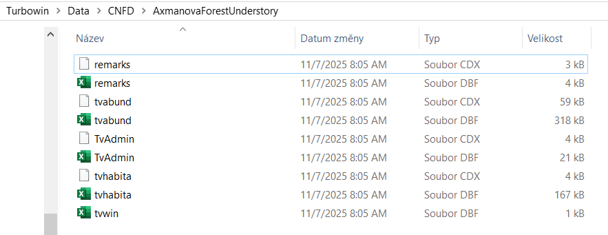
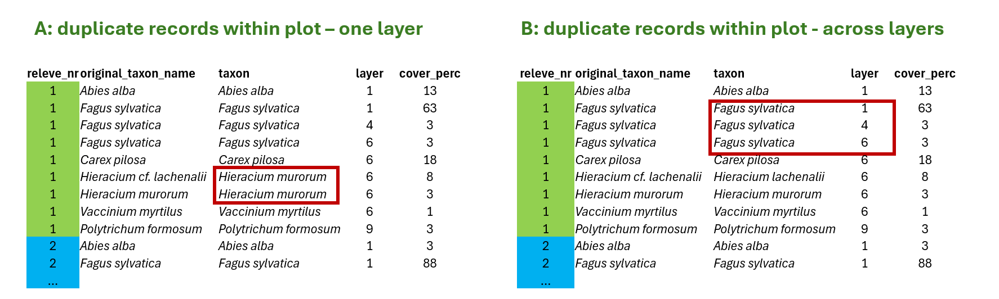
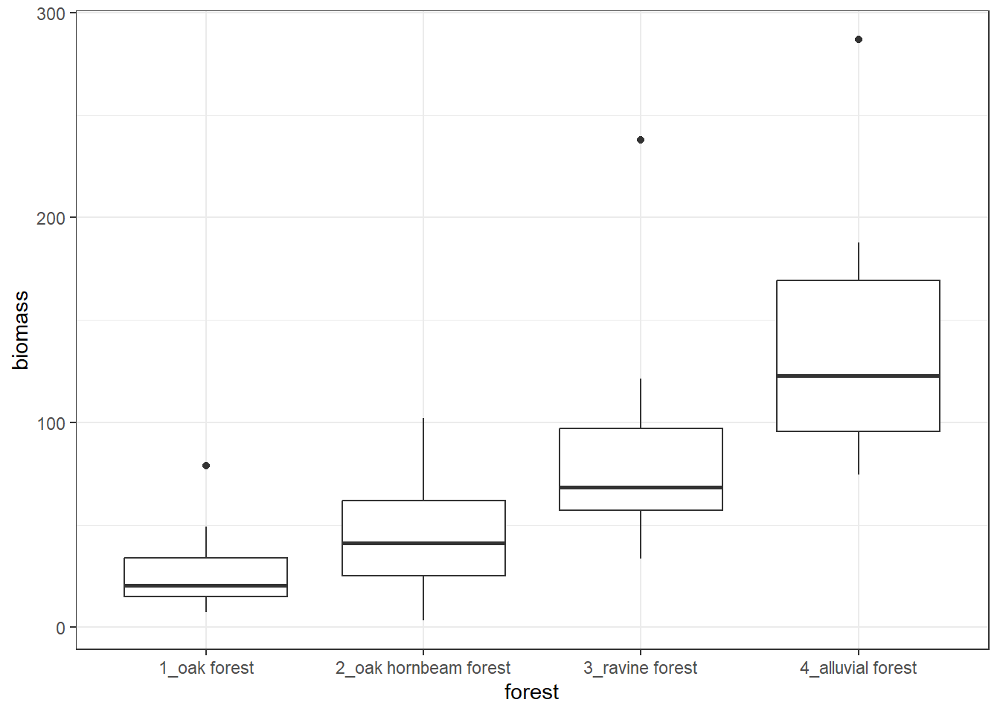
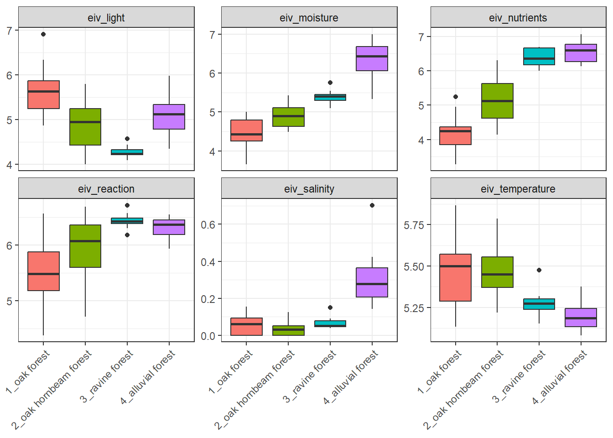
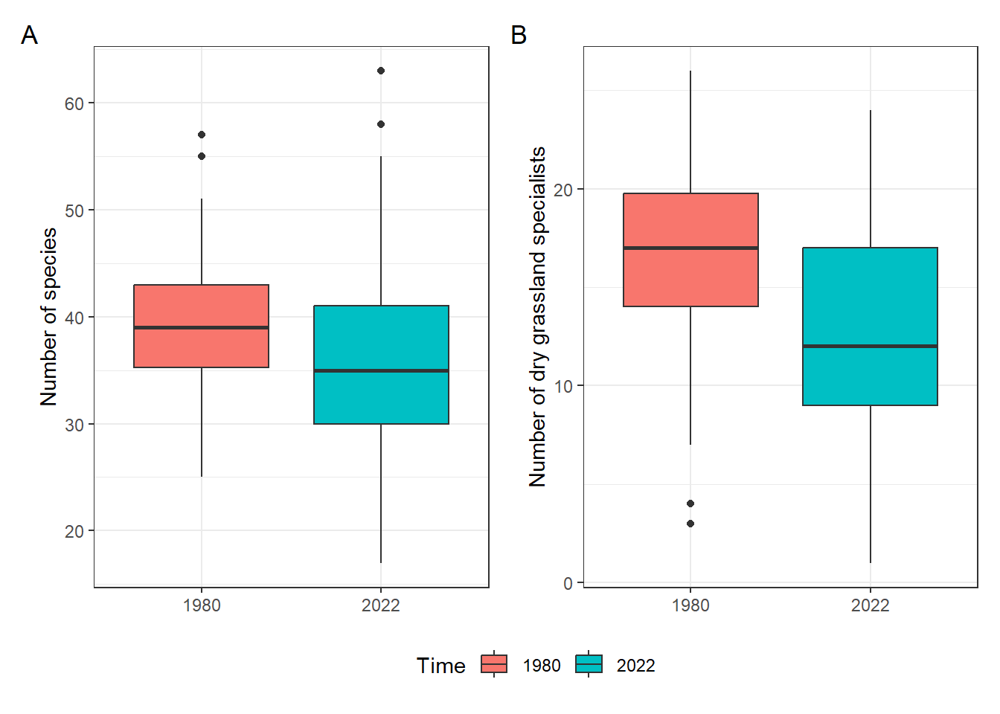

library(tidyverse)
library(readxl)
library(janitor) 11 From a database to a plot
Aim of this tutorial is to repeat what we have learned so far. We will step by step show you how to import the data from a database to R, prepare it for further analyses and prepare some basic summary of the data and plot answers to our questions. At the end of this chapter, you will find the final exercises that we want you to do and hand in. The script will be than considered as your final project of this course.
11.1 Example of database format data / Turboveg
Turboveg for Windows is a program designed for the storage, selection, and export of vegetation plot data (relevés).The information is divided among several files that are matched by either species ID or releve ID. Within the Turboveg interface, you do not see this structure directly, but you can find it if you look in the Turbowin folder, subfolder data and particular database (see example below).

At some point you need to export the data and process them further. To get Turboveg data to R, you first need to export the Turboveg database to a folder where you want to process the data. This step requires selection of all the plots you want to export. Alternatively you can access the files directly in the main file in Turbowin, but just to warn you, if you do something wrong here, you might completely loose your data.
11.2 Load libraries
11.3 Import env file = headers
One option is to check the exported database manually, open the file called tvhabita.dbf in Excel and save it as tvhabita.xlsx or tvhabita.csv (UTF 8 encoded) file into your data folder. Although it includes one more step outside R, it is still rather straightforward and it saves you troubles with different formats in Turboveg and in R (encoding issues). Other option is to open the dbf files directly, for example with the foreign package.
You can then import the file as csv file
env <- read_csv("data/turboveg_to_R/tvhabita.csv")Rows: 137 Columns: 84
── Column specification ────────────────────────────────────────────────────────
Delimiter: ","
chr (13): COUNTRY, COVERSCALE, AUTHOR, SYNTAXON, MOSS_IDENT, LICH_IDENT, REM...
dbl (45): RELEVE_NR, DATE, SURF_AREA, ALTITUDE, EXPOSITION, INCLINATIO, COV_...
lgl (26): REFERENCE, TABLE_NR, NR_IN_TAB, PROJECT, UTM, RESURVEY, FOR_EVA, R...
ℹ Use `spec()` to retrieve the full column specification for this data.
ℹ Specify the column types or set `show_col_types = FALSE` to quiet this message.If you check the imported names, they are rather difficult to handle.
names(env) [1] "RELEVE_NR" "COUNTRY" "REFERENCE" "TABLE_NR" "NR_IN_TAB"
[6] "COVERSCALE" "PROJECT" "AUTHOR" "DATE" "SYNTAXON"
[11] "SURF_AREA" "UTM" "ALTITUDE" "EXPOSITION" "INCLINATIO"
[16] "COV_TOTAL" "COV_TREES" "COV_SHRUBS" "COV_HERBS" "COV_MOSSES"
[21] "COV_LICHEN" "COV_ALGAE" "COV_LITTER" "COV_WATER" "COV_ROCK"
[26] "TREE_HIGH" "TREE_LOW" "SHRUB_HIGH" "SHRUB_LOW" "HERB_HIGH"
[31] "HERB_LOW" "HERB_MAX" "CRYPT_HIGH" "MOSS_IDENT" "LICH_IDENT"
[36] "REMARKS" "COORD_CODE" "SYNTAX_OLD" "RESURVEY" "FOR_EVA"
[41] "RS_PROJECT" "RS_SITE" "RS_PLOT" "RS_OBSERV" "PLOT_SHAPE"
[46] "MANIPULATE" "MANIPTYP" "LOC_METHOD" "DATA_OWNER" "EVA_ACCESS"
[51] "LONGITUDE" "LATITUDE" "PRECISION" "LOCALITY" "BIAS_MIN"
[56] "BIAS_GPS" "CEBA_GRID" "FIELD_NR" "HABITAT" "GEOLOGY"
[61] "SOIL" "WATER_PH" "S_PH_H2O" "S_PH_KCL" "S_PH_CACL2"
[66] "SOIL_PH" "CONDUCT" "NR_ORIG" "HLOUBK_CM" "DNO"
[71] "CEL_PLO_M2" "ZAROST_PLO" "ESY_CODE" "ESY_NAME" "COV_WOOD"
[76] "SOIL_DPT" "TRAMPLING" "PLOT_TYPE" "RS_CODE" "RS_PROJTYP"
[81] "RADIATION" "HEAT" "LES" "NELES" Therefore we will directly change them to tidy names with the clean_names function from package janitor. Alternative is to rename one by one using e.g. rename, but here we want to save time and effort.
env <- read_csv("data/turboveg_to_R/tvhabita.csv")%>%
clean_names() Rows: 137 Columns: 84
── Column specification ────────────────────────────────────────────────────────
Delimiter: ","
chr (13): COUNTRY, COVERSCALE, AUTHOR, SYNTAXON, MOSS_IDENT, LICH_IDENT, REM...
dbl (45): RELEVE_NR, DATE, SURF_AREA, ALTITUDE, EXPOSITION, INCLINATIO, COV_...
lgl (26): REFERENCE, TABLE_NR, NR_IN_TAB, PROJECT, UTM, RESURVEY, FOR_EVA, R...
ℹ Use `spec()` to retrieve the full column specification for this data.
ℹ Specify the column types or set `show_col_types = FALSE` to quiet this message.tibble(env)# A tibble: 137 × 84
releve_nr country reference table_nr nr_in_tab coverscale project author
<dbl> <chr> <lgl> <lgl> <lgl> <chr> <lgl> <chr>
1 183111 CZ NA NA NA 02 NA 0832
2 183112 CZ NA NA NA 02 NA 0832
3 183113 CZ NA NA NA 02 NA 0832
4 183114 CZ NA NA NA 02 NA 0832
5 183115 CZ NA NA NA 02 NA 0832
6 183116 CZ NA NA NA 02 NA 0832
7 183117 CZ NA NA NA 02 NA 0832
8 183118 CZ NA NA NA 02 NA 0832
9 183119 CZ NA NA NA 02 NA 0832
10 183120 CZ NA NA NA 02 NA 0832
# ℹ 127 more rows
# ℹ 76 more variables: date <dbl>, syntaxon <chr>, surf_area <dbl>, utm <lgl>,
# altitude <dbl>, exposition <dbl>, inclinatio <dbl>, cov_total <dbl>,
# cov_trees <dbl>, cov_shrubs <dbl>, cov_herbs <dbl>, cov_mosses <dbl>,
# cov_lichen <dbl>, cov_algae <dbl>, cov_litter <dbl>, cov_water <dbl>,
# cov_rock <dbl>, tree_high <dbl>, tree_low <dbl>, shrub_high <dbl>,
# shrub_low <dbl>, herb_high <dbl>, herb_low <dbl>, herb_max <dbl>, …names(env) [1] "releve_nr" "country" "reference" "table_nr" "nr_in_tab"
[6] "coverscale" "project" "author" "date" "syntaxon"
[11] "surf_area" "utm" "altitude" "exposition" "inclinatio"
[16] "cov_total" "cov_trees" "cov_shrubs" "cov_herbs" "cov_mosses"
[21] "cov_lichen" "cov_algae" "cov_litter" "cov_water" "cov_rock"
[26] "tree_high" "tree_low" "shrub_high" "shrub_low" "herb_high"
[31] "herb_low" "herb_max" "crypt_high" "moss_ident" "lich_ident"
[36] "remarks" "coord_code" "syntax_old" "resurvey" "for_eva"
[41] "rs_project" "rs_site" "rs_plot" "rs_observ" "plot_shape"
[46] "manipulate" "maniptyp" "loc_method" "data_owner" "eva_access"
[51] "longitude" "latitude" "precision" "locality" "bias_min"
[56] "bias_gps" "ceba_grid" "field_nr" "habitat" "geology"
[61] "soil" "water_ph" "s_ph_h2o" "s_ph_kcl" "s_ph_cacl2"
[66] "soil_ph" "conduct" "nr_orig" "hloubk_cm" "dno"
[71] "cel_plo_m2" "zarost_plo" "esy_code" "esy_name" "cov_wood"
[76] "soil_dpt" "trampling" "plot_type" "rs_code" "rs_projtyp"
[81] "radiation" "heat" "les" "neles" I will prepare a selection of the variables I want to keep and rewrite the file. Always keep releve_nr and coverscale, as you will need them later on.
env <- env %>%
select(releve_nr, coverscale,field_nr, country, author, date, syntaxon,
altitude, exposition, inclinatio,
cov_trees, cov_shrubs, cov_herbs, cov_mosses,
latitude, longitude, precision, bias_min, bias_gps, locality )Or I can add all the steps I did so far into one pipeline and check the resulting dataset
env <- read_csv("data/turboveg_to_R/tvhabita.csv")%>%
clean_names() %>%
select(releve_nr, coverscale, field_nr, country, author, date, syntaxon,
altitude, exposition, inclinatio,
cov_trees, cov_shrubs, cov_herbs, cov_mosses,
latitude, longitude, precision, bias_min, bias_gps, locality ) %>%
glimpse()Rows: 137 Columns: 84
── Column specification ────────────────────────────────────────────────────────
Delimiter: ","
chr (13): COUNTRY, COVERSCALE, AUTHOR, SYNTAXON, MOSS_IDENT, LICH_IDENT, REM...
dbl (45): RELEVE_NR, DATE, SURF_AREA, ALTITUDE, EXPOSITION, INCLINATIO, COV_...
lgl (26): REFERENCE, TABLE_NR, NR_IN_TAB, PROJECT, UTM, RESURVEY, FOR_EVA, R...
ℹ Use `spec()` to retrieve the full column specification for this data.
ℹ Specify the column types or set `show_col_types = FALSE` to quiet this message.Rows: 137
Columns: 20
$ releve_nr <dbl> 183111, 183112, 183113, 183114, 183115, 183116, 183117, 183…
$ coverscale <chr> "02", "02", "02", "02", "02", "02", "02", "02", "02", "02",…
$ field_nr <chr> "2/2007", "3/2007", "4/2007", "5/2007", "6/2007", "7/2007",…
$ country <chr> "CZ", "CZ", "CZ", "CZ", "CZ", "CZ", "CZ", "CZ", "CZ", "CZ",…
$ author <chr> "0832", "0832", "0832", "0832", "0832", "0832", "0832", "08…
$ date <dbl> 20070702, 20070702, 20070702, 20070703, 20070703, 20070703,…
$ syntaxon <chr> "LDA01", "LDA01", "LDA", "LDA01", "LDA", "LD", "LBB", "LB",…
$ altitude <dbl> 458, 414, 379, 374, 380, 373, 390, 255, 340, 368, 356, 427,…
$ exposition <dbl> 150, 150, 210, NA, 170, 65, NA, 80, 220, 95, 200, 170, 130,…
$ inclinatio <dbl> 24, 13, 21, 0, 10, 6, 0, 38, 13, 29, 38, 27, 7, 22, 9, 21, …
$ cov_trees <dbl> 80, 80, 75, 70, 65, 65, 85, 80, 70, 85, 45, 70, 65, 70, 80,…
$ cov_shrubs <dbl> 0, 0, 0, 0, 1, 0, 0, 20, 0, 15, 1, 0, 2, 1, 12, 0, 0, 0, 0,…
$ cov_herbs <dbl> 25, 25, 30, 35, 60, 70, 70, 15, 75, 8, 75, 40, 60, 40, 60, …
$ cov_mosses <dbl> 10, 8, 10, 8, 3, 5, 5, 10, 3, 5, 20, 3, 5, 30, 1, 5, 1, 5, …
$ latitude <dbl> 492015.3, 492128.9, 492126.4, 490210.2, 490203.1, 490158.5,…
$ longitude <dbl> 163420.0, 163345.8, 162913.4, 162137.8, 162128.3, 162117.2,…
$ precision <dbl> 0, 0, 0, 0, 0, 0, 0, 0, 0, 0, 0, 0, 0, 0, 0, 0, 0, 0, 0, 0,…
$ bias_min <dbl> 0, 0, 0, 0, 0, 0, 0, 0, 0, 0, 0, 0, 0, 0, 0, 0, 0, 0, 0, 0,…
$ bias_gps <dbl> 5, 6, 10, 6, 5, 6, 14, 6, 4, 5, 5, 5, 6, 6, 5, 11, 8, 7, 4,…
$ locality <chr> "Svinošice (Brno, Kuřim); 450 m SZ od středu obce", "Lažany…And save it for easier access.
write.csv(env, "data/turboveg_to_R/env.csv")11.4 Import spe file = species file in a long format
Again, we will open the tvabund.dbf in Excel and save it as tvabund.csv. And import it to our environment in R. Again, I will use the clean_names function during import, so that we have the same style of the variable names.
tvabund <- read_csv("data/turboveg_to_R/tvabund.csv") %>%
clean_names()Rows: 4583 Columns: 5
── Column specification ────────────────────────────────────────────────────────
Delimiter: ","
chr (1): COVER_CODE
dbl (3): RELEVE_NR, SPECIES_NR, LAYER
lgl (1): _ORIG_NAME
ℹ Use `spec()` to retrieve the full column specification for this data.
ℹ Specify the column types or set `show_col_types = FALSE` to quiet this message.glimpse(tvabund)Rows: 4,583
Columns: 5
$ releve_nr <dbl> 183111, 183111, 183111, 183111, 183111, 183111, 183111, 183…
$ species_nr <dbl> 2206, 2315, 3351, 4283, 4430, 4577, 5127, 5137, 5165, 5353,…
$ cover_code <chr> "+", "1", "r", "1", "r", "r", "1", "+", "r", "r", "2b", "+"…
$ layer <dbl> 6, 7, 6, 6, 7, 6, 6, 6, 6, 6, 6, 6, 6, 6, 1, 7, 6, 6, 6, 6,…
$ orig_name <lgl> NA, NA, NA, NA, NA, NA, NA, NA, NA, NA, NA, NA, NA, NA, NA,…Now we will check the data again and we see, that there are no species names, just numbers. Also the cover is given in the original codes and not in percentages. See the scheme below to understand where each piece of the information is stored.

We have to prepare these different files we need, import them and merge them.
11.4.1 Nomenclature
In the abund file, species numbers refer to the codes in the checklist used in the Turboveg database. To translate them into species names you will need a translation table with the original number in the database, original name in the database and the name you want to use in the analyses.
We will now import the nomenclature file that is already adapted for Czech flora.
nomenclature <- read_csv("data/turboveg_to_R/nomenclature_20251108.csv") %>%
clean_names() Rows: 13862 Columns: 7
── Column specification ────────────────────────────────────────────────────────
Delimiter: ","
chr (4): LETTERCODE, TurbovegCzechiaSlovakia, Kaplan, ExpertSystem
dbl (2): SPECIES_NR, nonvascular
lgl (1): SYNONYM
ℹ Use `spec()` to retrieve the full column specification for this data.
ℹ Specify the column types or set `show_col_types = FALSE` to quiet this message.tibble(nomenclature)# A tibble: 13,862 × 7
species_nr lettercode synonym turboveg_czechia_slovakia kaplan expert_system
<dbl> <chr> <lgl> <chr> <chr> <chr>
1 14321 *CONC*C FALSE x Conygeron huelsenii x Con… x Conyzigero…
2 14323 *DACD*A FALSE x Dactylodenia gracilis x Dac… x Dactylogym…
3 14324 *DACD*A TRUE x Dactylodenia st.-quinti… x Dac… x Dactylogym…
4 14322 *DACD*D FALSE x Dactylodenia comigera x Dac… x Dactylogym…
5 14325 *DATD*D FALSE x Dactyloglossum erdingeri x Dac… x Dactyloglo…
6 14327 *FESF*E FALSE x Festulolium loliaceum x Fes… x Festuloliu…
7 14326 *FESF*F FALSE x Festulolium braunii x Fes… x Festuloliu…
8 14328 *GYMG*G FALSE x Gymnanacamptis anacampt… x Gym… x Gymnanacam…
9 14329 *ORCO*O FALSE x Orchidactyla boudieri x Dac… x Dactylocam…
10 14330 *PSEP*P FALSE x Pseudadenia schweinfurt… x Pse… x Pseudadeni…
# ℹ 13,852 more rows
# ℹ 1 more variable: nonvascular <dbl>There are several advantages about this approach. First, you can adjust the nomenclature to the newest source/regional checklist etc. In our example the name in Turboveg is translated to the nomenclature presented in the recent Key of the Czech Flora, and it is named after the main editor Kaplan.
Second, I can add a concept that groups several taxa into higher units, e.g. taxa that are not easy to recognise in the field are assigned into aggregates. This is exactly the same approach as you do when you create an expert system file. Here it is even more easy to understand and much easier to change the translation when you need to fix something. The name in this file is called ESy.
Last but not least. I can directly add much more information into such table. For example status, growth form or anything else. Here we have indication if the species is nonvascular.
I might want to check how the species are translated with the use of my translation file and select just these matching rows. Either create a variable called selection indicating if the species is in the subset or not
nomenclature_check<- nomenclature %>%
left_join(tvabund %>%
distinct(species_nr)%>%
mutate(selection=1)) Joining with `by = join_by(species_nr)`or I can even add the frequency, how many times it appears in the records of the dataset
nomenclature_check<- nomenclature %>%
left_join(tvabund %>%
count(species_nr)) Joining with `by = join_by(species_nr)`I can then write the file, make adjustments e.g. in Excel and upload it newly. Great thing is that I have indication of which species are in the dataset and I do not have to pay attention to the other rows.
write.csv(nomenclature_check, "data/turboveg_to_R/nomenclature_check.csv")upload the new, adjusted file
nomenclature <- read_csv("data/turboveg_to_R/nomenclature_check.csv") %>%
clean_names() 11.4.2 Cover
We have translation table for nomenclature, but we still need to translate cover codes to percentages. For cover translation we need to use information about cover scale (stored in the header data / tvhabita / env file) and information how to translate the values in that particular scale to percentages. The file here was prepared based on the translation of cover values in different scales to percentages following the EVA database approach. One more column was added to enable different adjustments, for example change the values for rare species etc. For any project I suggest to open the file and check if the scales you are using are there and if you agree with the translation.
cover <- read_csv("data/turboveg_to_R/cover_20230402.csv") %>% clean_names() Rows: 326 Columns: 6
── Column specification ────────────────────────────────────────────────────────
Delimiter: ","
chr (3): CoverScaleName, COVERSCALE, COVER_CODE
dbl (3): ID, CoverPercEVA, CoverPerc
ℹ Use `spec()` to retrieve the full column specification for this data.
ℹ Specify the column types or set `show_col_types = FALSE` to quiet this message.tibble(cover)# A tibble: 326 × 6
id cover_scale_name coverscale cover_code cover_perc_eva cover_perc
<dbl> <chr> <chr> <chr> <dbl> <dbl>
1 1 Percetage % 00 0.1 0.1 0.1
2 2 Percetage % 00 0.2 0.2 0.2
3 3 Percetage % 00 0.3 0.3 0.3
4 4 Percetage % 00 0.4 0.4 0.4
5 5 Percetage % 00 0.5 0.5 0.5
6 6 Percetage % 00 0.6 0.6 0.6
7 7 Percetage % 00 0.7 0.7 0.7
8 8 Percetage % 00 0.8 0.8 0.8
9 9 Percetage % 00 0.9 0.9 0.9
10 10 Percetage % 00 1 1 1
# ℹ 316 more rowsThe file here was prepared based on the translation of cover values in different scales to percentages following the EVA database approach. One more column was added to enable different adjustments, for example change the values for rare species etc. For any project I suggest to open the file and check if the scales you are using are there and if you agree with the translation.
Here I can check the different scale names included in the file
cover %>% distinct(cover_scale_name) # A tibble: 16 × 1
cover_scale_name
<chr>
1 Percetage %
2 Braun/Blanquet (old)
3 Braun/Blanquet (new)
4 Londo
5 Presence/Absence
6 Ordinale scale (1-9)
7 Barkman, Doing & Segal
8 Doing
9 Domin
10 Sedlakova
11 Zlatnˇk
12 Percentual scale
13 Hedl
14 Kuźera
15 Domin (uprava Hadac)
16 Percentual (r, +) And I can also filter the rows of the specified scales. E.g. here I am looking for all those that start with a specific pattern “Braun”
cover %>%
filter(str_starts(cover_scale_name, "Braun")) %>%
print(n=20)# A tibble: 16 × 6
id cover_scale_name coverscale cover_code cover_perc_eva cover_perc
<dbl> <chr> <chr> <chr> <dbl> <dbl>
1 110 Braun/Blanquet (old) 01 r 1 1
2 111 Braun/Blanquet (old) 01 + 2 2
3 112 Braun/Blanquet (old) 01 1 3 3
4 113 Braun/Blanquet (old) 01 2 13 13
5 114 Braun/Blanquet (old) 01 3 38 38
6 115 Braun/Blanquet (old) 01 4 63 63
7 116 Braun/Blanquet (old) 01 5 88 88
8 117 Braun/Blanquet (new) 02 r 1 0.1
9 118 Braun/Blanquet (new) 02 + 2 0.5
10 119 Braun/Blanquet (new) 02 1 3 3
11 120 Braun/Blanquet (new) 02 2m 4 4
12 121 Braun/Blanquet (new) 02 2a 8 10
13 122 Braun/Blanquet (new) 02 2b 18 20
14 123 Braun/Blanquet (new) 02 3 38 37.5
15 124 Braun/Blanquet (new) 02 4 63 62.5
16 125 Braun/Blanquet (new) 02 5 88 87.511.4.3 Merging all files together into complete spe file
Finally, I have translation to nomenclature, to cover, so I need to put everything together.
tvabund %>%
left_join(nomenclature %>%
select(species_nr, kaplan, expert_system, nonvascular)) %>%
left_join(env %>% select(releve_nr, coverscale)) %>%
left_join(cover %>% select(coverscale,cover_code,cover_perc))Joining with `by = join_by(species_nr)`
Joining with `by = join_by(releve_nr)`
Joining with `by = join_by(cover_code, coverscale)`# A tibble: 4,583 × 10
releve_nr species_nr cover_code layer orig_name kaplan expert_system
<dbl> <dbl> <chr> <dbl> <lgl> <chr> <chr>
1 183111 2206 + 6 NA Carex digitata… Carex digita…
2 183111 2315 1 7 NA Carpinus betul… Carpinus bet…
3 183111 3351 r 6 NA Cytisus nigric… Cytisus nigr…
4 183111 4283 1 6 NA Festuca ovina Festuca ovina
5 183111 4430 r 7 NA Fraxinus excel… Fraxinus exc…
6 183111 4577 r 6 NA Galium rotundi… Galium rotun…
7 183111 5127 1 6 NA Hieracium lach… Hieracium la…
8 183111 5137 + 6 NA Hieracium muro… Hieracium mu…
9 183111 5165 r 6 NA Hieracium saba… Hieracium sa…
10 183111 5353 r 6 NA Hypericum perf… Hypericum pe…
# ℹ 4,573 more rows
# ℹ 3 more variables: nonvascular <dbl>, coverscale <chr>, cover_perc <dbl>The output contains these variables
"releve_nr" "species_nr" "cover_code" "layer" "orig_name" "kaplan" "expert_system" "nonvascular" "coverscale" "cover_perc" If I am satisfied with the result I assign the pipeline into the spe file. I still want to add one more line to remove nonvasculars (mosses) and add one more line to select just needed variables. I decided to follow the concept saved in the expert_system name and I renamed it directly in the select function
spe<- tvabund %>%
left_join(nomenclature %>%
select(species_nr, kaplan, expert_system, nonvascular)) %>%
left_join(env %>% select(releve_nr, coverscale)) %>%
left_join(cover %>% select(coverscale,cover_code,cover_perc)) %>%
filter (!nonvascular==1) %>%
select(releve_nr, species= expert_system, layer, cover_perc)Joining with `by = join_by(species_nr)`
Joining with `by = join_by(releve_nr)`
Joining with `by = join_by(cover_code, coverscale)`To see the result we will use view
view(spe)We can again save the final file, to be easily accessible for later
write.csv(spe, "data/turboveg_to_R/spe.csv")11.5 Merging of species covers
11.5.1 Duplicate species records
What is the problem? Sometimes we have some species names listed more than once in the same plot. Either because we changed the original concept (from subspecies to species level, or after additional identification) or because we recorded the same species in different layers. Depending on our further questions and analyses this might become minor or bigger problem.

A> In the first case, duplicate within one layer, I can fix the problem by summing the values for the same species in the same layer to get distinct species-layer combinations per plot. This is something we need to do. Otherwise our data would go against tidy approach and we will experience issues in joins, summarisation etc.
B> In the other case, duplicate across layers, the data are OK, because there is one more variable that makes it unique record (layer). But if we want to look at the whole community and e.g. calculate share of some life forms weighted by cover, etc. we again need to sum the values across layers and put all the species as they were in the same layer (this is then usually marked as 0).
11.5.2 Duplicates checking
We recommend to always do the following check of the data. Simply group species by releves/plots and count if some of the species are at more rows.
spe %>%
group_by(releve_nr, species, layer) %>%
count() %>%
filter(n>1)# A tibble: 2 × 4
# Groups: releve_nr, species, layer [2]
releve_nr species layer n
<dbl> <chr> <dbl> <int>
1 132 Galium palustre agg. 6 2
2 183182 Galium palustre agg. 6 2We can see that in two releves/plots there is a conflict in the species Galium palustre agg. Most probably we separated two species in the field that we later on decided to group into this aggregate. We can go back and check where exactly this happened, by exactly specifying where to look.
tvabund %>%
select(releve_nr, species_nr)%>%
left_join(nomenclature %>%
select(species_nr, turboveg= turboveg_czechia_slovakia,
species=expert_system)) %>%
filter(releve_nr %in% c(132, 183182) & species =="Galium palustre agg.")Joining with `by = join_by(species_nr)`# A tibble: 4 × 4
releve_nr species_nr turboveg species
<dbl> <dbl> <chr> <chr>
1 183182 4558 Galium elongatum Galium palustre agg.
2 183182 4570 Galium palustre Galium palustre agg.
3 132 4558 Galium elongatum Galium palustre agg.
4 132 4570 Galium palustre Galium palustre agg.Alternatively, I can save the first output and use semi-join function, which is very useful if there are more rows I want to check and I do not need to specify multiple conditions in the filter.
test<-spe %>%
group_by(releve_nr, species, layer) %>%
count() %>%
filter(n>1)
tvabund %>%
select(releve_nr, species_nr)%>%
left_join(nomenclature %>%
select(species_nr, turboveg= turboveg_czechia_slovakia,
species=expert_system)) %>%
semi_join(test)Joining with `by = join_by(species_nr)`
Joining with `by = join_by(releve_nr, species)`# A tibble: 4 × 4
releve_nr species_nr turboveg species
<dbl> <dbl> <chr> <chr>
1 183182 4558 Galium elongatum Galium palustre agg.
2 183182 4570 Galium palustre Galium palustre agg.
3 132 4558 Galium elongatum Galium palustre agg.
4 132 4570 Galium palustre Galium palustre agg.OK, I understand why it happened and I have to fix it now. But we continue checking. Now we will check if there is also problem with species across layers (B). I will simply change the grouping conditions, to the higher hierarchy.
spe %>%
group_by(releve_nr, species) %>%
count() %>%
filter(n>1)# A tibble: 375 × 3
# Groups: releve_nr, species [375]
releve_nr species n
<dbl> <chr> <int>
1 1 Acer campestre 2
2 1 Quercus petraea agg. 2
3 2 Quercus petraea agg. 2
4 3 Quercus petraea agg. 2
5 4 Carpinus betulus 2
6 4 Quercus petraea agg. 2
7 5 Quercus petraea agg. 2
8 6 Ligustrum vulgare 2
9 6 Quercus petraea agg. 2
10 6 Rosa species 2
# ℹ 365 more rowsWe got lot of duplicates, right? But it is understandable in the vegetation type we have. So keep it in mind for later analyses.
Sometimes it is actually good to take some extra time and just look at what is inside. Are there just trees recorded also as shrubs and juveniles or are there some herbs by mistake included in tree layer? Use view to see the whole list.
spe %>%
distinct(species,layer)%>%
group_by(species) %>%
count() %>%
filter(n>1) # A tibble: 38 × 2
# Groups: species [38]
species n
<chr> <int>
1 Acer campestre 3
2 Acer platanoides 3
3 Acer pseudoplatanus 3
4 Aesculus hippocastanum 2
5 Alnus glutinosa 3
6 Alnus incana 3
7 Carpinus betulus 3
8 Cornus mas 2
9 Cornus sanguinea 2
10 Corylus avellana 3
# ℹ 28 more rows11.5.3 Fixing duplicate rows
Now finally the fixing. For some questions the most easiest thing how to resolve duplicate rows is to select only the relevant variables and groups and use distinct function. E.g. for species richness this would be enough. BUT we will lose information about the abundance, in our case percentage cover of each species.
spe %>%
distinct(releve_nr, species,layer)# A tibble: 4,575 × 3
releve_nr species layer
<dbl> <chr> <dbl>
1 183111 Carex digitata 6
2 183111 Carpinus betulus 7
3 183111 Cytisus nigricans 6
4 183111 Festuca ovina 6
5 183111 Fraxinus excelsior 7
6 183111 Galium rotundifolium 6
7 183111 Hieracium lachenalii 6
8 183111 Hieracium murorum 6
9 183111 Hieracium sabaudum s.lat. 6
10 183111 Hypericum perforatum 6
# ℹ 4,565 more rowsThe percentage cover is estimated visually relative to the total area. In the field it is estimated indepently of other plants, because we know that the plants overlap within vertical space. If we use normal sum function, we can easily get total cover per plot above 100%. Although we can separate the information into vegetation layers, it is still rather coarse division. Especially in grasslands where the main diversity is in just one, often very dense, layer.
Therefore we will use the approach suggested by H.S. Fischer in the paper On combination of species from different vegetation layers (AVS 2014), where he suggested summing up covers considering overlap among species, so that the overall maximum value is 100 and all the values are adjusted relative to this treshold. We will prepare function called combine_cover
combine_cover <- function(x){
while (length(x)>1){
x[2] <- x[1]+(100-x[1])*x[2]/100
x <- x[-1]
}
return(x)
}A, Now let’s check how it works. We will first fix the issue with duplicates within the same layer (A)
spe %>%
group_by(releve_nr, species, layer) %>%
summarise(cover_perc_new = combine_cover(cover_perc)) `summarise()` has grouped output by 'releve_nr', 'species'. You can override
using the `.groups` argument.# A tibble: 4,575 × 4
# Groups: releve_nr, species [4,138]
releve_nr species layer cover_perc_new
<dbl> <chr> <dbl> <dbl>
1 1 Acer campestre 1 20
2 1 Acer campestre 7 0.5
3 1 Acer platanoides 7 0.1
4 1 Anemone species 6 0.5
5 1 Bromus benekenii 6 0.1
6 1 Carex digitata 6 3
7 1 Carex michelii 6 0.1
8 1 Carex montana 6 0.5
9 1 Carpinus betulus 7 0.5
10 1 Cephalanthera damasonium 6 0.1
# ℹ 4,565 more rowsand we will add the pipelines for checking if there are still some duplicate rows. Note summarise finished the group_by function, so I have to specify the grouping again in the count (or add the group_by before count again).
spe %>%
group_by(releve_nr, species, layer) %>%
summarize(cover_perc_new = combine_cover(cover_perc))%>%
count(releve_nr, species, layer) %>%
filter(n>1)# A tibble: 0 × 4
# Groups: releve_nr, species [0]
# ℹ 4 variables: releve_nr <dbl>, species <chr>, layer <dbl>, n <int>When the output have no rows, it means our attempt solved the issue.
If I am happy, I overwrite cover directly, save the output for easier access (next time you can start with reloading this file) or I will assign the whole pipeline into a new object e.g. ->spe_merged
spe %>%
group_by(releve_nr, species, layer) %>%
summarize(cover_perc = combine_cover(cover_perc))%>%
write_csv("data/turboveg_to_R/spe_merged_covers.csv")B, We want to also remove information about layer and work at whole community level. This means we will do the same, we will just not add the layer into grouping, as we do not want to pay attention to it anymore.
spe %>%
group_by(releve_nr, species) %>%
summarize(cover_perc = combine_cover(cover_perc))%>%
write_csv("data/turboveg_to_R/spe_merged_covers_across_layers.csv")11.5.4 Total cover of all species in the plot
The same approach as we did for merging covers can be used also for calculating total cover in the plot. Here you can see the comparison of total cover calculated as ordinary sum and total cover calculated with considering the overlaps.
spe %>%
group_by(releve_nr) %>%
summarize(covertotal_sum = sum(cover_perc),
covertotal_overlap = combine_cover(cover_perc)) %>%
select(releve_nr, covertotal_sum, covertotal_overlap)%>%
arrange(desc(covertotal_sum))# A tibble: 137 × 3
releve_nr covertotal_sum covertotal_overlap
<dbl> <dbl> <dbl>
1 183134 253 95.7
2 125 232. 93.3
3 183175 232. 93.3
4 131 223. 92.4
5 183181 223. 92.4
6 130 201. 92.4
7 183180 201. 92.4
8 129 192. 89.4
9 183179 192. 89.4
10 113 192. 90.4
# ℹ 127 more rowsThe same with respect to layers
spe %>%
group_by(releve_nr, layer) %>%
summarize(covertotal_sum = sum(cover_perc),
covertotal_overlap = combine_cover(cover_perc)) %>%
select(releve_nr, layer, covertotal_sum, covertotal_overlap)# A tibble: 497 × 4
# Groups: releve_nr [137]
releve_nr layer covertotal_sum covertotal_overlap
<dbl> <dbl> <dbl> <dbl>
1 1 1 82.5 70
2 1 4 13.5 13.1
3 1 6 22.2 20.1
4 1 7 10 9.64
5 2 1 62.5 62.5
6 2 6 31.5 28.8
7 2 7 13.1 12.8
8 3 1 62.5 62.5
9 3 6 23.8 21.5
10 3 7 4 4
# ℹ 487 more rows11.6 Joining information about traits and other variables
We will first read the data newly, to be sure we know what we are working with. At this point we can actually clean the environment, remove everything.
11.6.1 env dataset
First I want to add some more variables that were measured separately. In addition this file is already filtered to a subset I want to use.
env_extra<- read_csv("data/turboveg_to_R/axmanova_forest_env_extra.csv")%>%
clean_names()Rows: 65 Columns: 22
── Column specification ────────────────────────────────────────────────────────
Delimiter: ","
chr (1): ForestTypeName
dbl (21): Releve_nr, ForestType, Herbs, Juveniles, CoverE1, Biomass, Soil_de...
ℹ Use `spec()` to retrieve the full column specification for this data.
ℹ Specify the column types or set `show_col_types = FALSE` to quiet this message.For env dataset I want to import the clean version which was saved in this script, but I will directly filter it to the same subset as above. I can do it with semi_join. But I decided to merge both datasets at this point - to keep only the matching rows but all information I want.
env<- read_csv("data/turboveg_to_R/env.csv") %>%
inner_join(env_extra %>%
select (releve_nr, forest_type, forest_type_name,
soil_ph=p_h_k_cl, biomass)%>%
unite(forest, forest_type, forest_type_name))New names:
Rows: 137 Columns: 21
── Column specification
──────────────────────────────────────────────────────── Delimiter: "," chr
(6): coverscale, field_nr, country, author, syntaxon, locality dbl (15): ...1,
releve_nr, date, altitude, exposition, inclinatio, cov_trees...
ℹ Use `spec()` to retrieve the full column specification for this data. ℹ
Specify the column types or set `show_col_types = FALSE` to quiet this message.
Joining with `by = join_by(releve_nr)`
• `` -> `...1`11.6.2 spe dataset
I want to work with the spe dataset, and I want to keep information about layers, as I want to focus on the herb-layer.
spe <- read_csv ("data/turboveg_to_R/spe_merged_covers.csv")%>%
semi_join(env)Rows: 4575 Columns: 4
── Column specification ────────────────────────────────────────────────────────
Delimiter: ","
chr (1): species
dbl (3): releve_nr, layer, cover_perc
ℹ Use `spec()` to retrieve the full column specification for this data.
ℹ Specify the column types or set `show_col_types = FALSE` to quiet this message.
Joining with `by = join_by(releve_nr)`11.6.3 traits
I also want to add some information about traits. So I will check what is available in my folder
list.files("data/turboveg_to_R") [1] "axmanova_forest_env_extra.csv"
[2] "cover_20230402.csv"
[3] "ekologicke_indikacni_hodnoty.xlsx"
[4] "env.csv"
[5] "nomenclature_20251108.csv"
[6] "nomenclature_check.csv"
[7] "Pladias-taxony-puvod-invazni-status-cerveny-seznam-ochrana-2023-11-06.xlsx"
[8] "readme.txt"
[9] "spe.csv"
[10] "spe_merged_covers.csv"
[11] "spe_merged_covers_across_layers.csv"
[12] "species.csv"
[13] "traits.csv"
[14] "tvabund.csv"
[15] "tvhabita.csv"
[16] "Vyska.xlsx"
[17] "Zivotni_forma.xlsx" First we will import the file downloaded from the Pladias database, with information about status. The file itseslf is in Czech and it needs some fixing to make it tidy. Below, you can already find one suggestion how to import this file, but we will check together how to read it and how it works step by step.
status <- read_excel("data/turboveg_to_R/Pladias-taxony-puvod-invazni-status-cerveny-seznam-ochrana-2023-11-06.xlsx") %>%
clean_names()%>%
select(species=vedecke_jmeno, origin=puvodnost_v_cr,
redlist=cerveny_seznam_2017_narodni_kategorie_ohrozeni)%>%
mutate(origin = case_when(
origin == "původní" ~ "native",
origin %in% c("archeofyt/neofyt", "archeofyt") ~ "arch",
origin == "neofyt" ~ "neo",
TRUE ~ NA_character_))%>%
mutate(redlist = case_when(
redlist == "taxon není zařazen do Červeného seznamu" ~ NA_character_,
TRUE ~ redlist))Now we will import data about plant height, again there are few issues, so we will fix it and calculate the mean height.
plant_height <- read_excel("data/turboveg_to_R/Vyska.xlsx") %>%
clean_names() %>%
select(species=taxon, height_min=min, height_max=max)%>%
mutate(across(c(height_min, height_max), ~ as.numeric(.x)))%>%
mutate(height_mean = ((height_min+height_max)/2))And Ellenberg indicator values
indicator_values <- read_excel("data/turboveg_to_R/ekologicke_indikacni_hodnoty.xlsx") %>%
clean_names() %>%
select(species=name,
eiv_light=l_cz, eiv_temperature=t_cz,
eiv_moisture=m_cz, eiv_reaction=r_cz,
eiv_nutrients= n_cz, eiv_salinity=s_cz)%>%
mutate(across(-species, ~ as.numeric(.x)))11.7 Summary statistics and graphical outputs
I will a bit explore the data and ask about which factors influence species richness. Here are just few examples, we will read together the scripts and you will adopt them later to other tasks. First I want to produce a table with summary statistics like min, mean, max for two variables plant height, and biomass per forest type. The first one is a trait, so we need to append it to species file and calculate community means, while the other is a variable measured in each plot.
statistics <- spe %>%
filter(layer == "6") %>%
left_join(plant_height %>%
select(species, height = height_mean)) %>%
left_join(env) %>%
arrange(forest) %>%
summarise(across(c(height,cov_herbs, biomass, cov_trees,soil_ph ),
list(
min = ~min(.x, na.rm = TRUE),
mean = ~mean(.x, na.rm = TRUE),
max = ~max(.x, na.rm = TRUE))),.by = forest)Joining with `by = join_by(species)`
Joining with `by = join_by(releve_nr)`Or I can create boxplots for these, one by one or with the use of function (see chapter 7+8).
env %>%
ggplot(aes(forest, biomass)) +
geom_boxplot()+
theme_bw()
Alternatively I can also do it like this, that I save the values to long format and use facet_wrap to create more boxplots at once:
env %>%
arrange(forest) %>%
select(forest, cover_herbs=cov_herbs, biomass, cover_trees =cov_trees, soil_ph) %>%
tidyr::pivot_longer(
cols = c(cover_herbs, biomass, cover_trees, soil_ph),
names_to = "variable",
values_to = "value")%>%
ggplot(aes(x = forest, y = value, fill=forest)) +
geom_boxplot() +
facet_wrap(~ variable, scales = "free_y") +
theme_bw() +
theme(legend.position = 'none')+
theme(axis.text.x = element_text(angle = 45, hjust = 1))+
labs(x = NULL) +
labs (y = NULL)
I might be interested in species richness relationship with several factors. Below is an example of herb-layer species richness and biomass. At first I need to calculate the species richness in the spe file. And as an output I want to plot this with different colours for different forest types but keep the regression line for the whole dataset.
spe %>%
filter(layer %in% c(6, 7)) %>%
count(releve_nr, name = "herblayer_richness") %>%
left_join(env %>%
select(releve_nr, biomass, forest), by = "releve_nr") %>%
ggplot(aes(x = sqrt(biomass), y = herblayer_richness)) +
geom_point(aes(colour = forest), size = 2, alpha = 0.8) +
geom_smooth(method = "lm", se = TRUE, colour = "black") +
theme_bw() +
labs(
x = "sqrt Biomass",
y = "Herb-layer species richness",
colour = "Forest type"
)`geom_smooth()` using formula = 'y ~ x'
Boxplots of Ellenberg-type indicator values are based again on species data and values specific for each species. We will calculate non-weighted mean for each plot and prepare boxplots for individual forest types. Again I will use the step with long format and facet wrap.
spe %>%
left_join(indicator_values) %>%
select(-c(layer, cover_perc)) %>%
distinct() %>%
group_by(releve_nr) %>%
summarise(across(starts_with("EIV"), ~ mean(.x, na.rm = TRUE))) %>%
left_join(env %>% select(releve_nr, forest))%>%
pivot_longer(
cols = starts_with("EIV"),
names_to = "EIV_variable",
values_to = "value")%>%
ggplot(aes(x = forest, y = value, fill = forest)) +
geom_boxplot() +
facet_wrap(~ EIV_variable, scales = "free_y") +
theme_bw()+
theme(legend.position = 'none')+
theme(axis.text.x = element_text(angle = 45, hjust = 1))+
labs(x = NULL) +
labs (y = NULL)Joining with `by = join_by(species)`
Joining with `by = join_by(releve_nr)`
Proportions of endangered or alien species in forest type. I will first look at the numbers of these species, here on example of redlist i.e. endangered species. I just one to see average number of redlist species per forest type.
spe%>%
left_join(spe %>%
left_join(status)%>%
filter(!is.na(redlist))%>%
count(releve_nr, name="richness_redlist"))%>%
left_join(spe %>%
summarise(richness_all = n_distinct(species),
.by = releve_nr))%>%
distinct(releve_nr,richness_redlist,richness_all)%>%
mutate(richness_redlist = replace_na(richness_redlist, 0))%>%
mutate(richness_redlist_perc= richness_redlist/richness_all*100)%>%
left_join(env%>% select(releve_nr, forest))%>%
summarise(redlist_mean_perc = mean(richness_redlist_perc), .by=forest)%>%
arrange(forest)Joining with `by = join_by(species)`
Joining with `by = join_by(releve_nr)`
Joining with `by = join_by(releve_nr)`
Joining with `by = join_by(releve_nr)`# A tibble: 4 × 2
forest redlist_mean_perc
<chr> <dbl>
1 1_oak forest 6.25
2 2_oak hornbeam forest 6.24
3 3_ravine forest 5.03
4 4_alluvial forest 1.71But I can also ask about diferences in abundances of some plant groups. What is the proportion of cover of alien species relative to total cover in different forests?
spe%>%
left_join(spe %>%
left_join(status)%>%
filter(origin %in% c("arch","neo"))%>%
summarize(cover_alien = combine_cover(cover_perc),
.by=releve_nr))%>%
left_join(spe %>%
summarize(cover_total = combine_cover(cover_perc),
.by=releve_nr))%>%
distinct(releve_nr, cover_alien, cover_total)%>%
mutate(cover_alien = replace_na(cover_alien, 0))%>%
mutate(cover_alien_perc= cover_alien/cover_total*100)%>%
left_join(env%>% select(releve_nr, forest))%>%
summarise(alien_cover_mean_perc = mean(cover_alien_perc), .by=forest)%>%
arrange(forest)Joining with `by = join_by(species)`
Joining with `by = join_by(releve_nr)`
Joining with `by = join_by(releve_nr)`
Joining with `by = join_by(releve_nr)`# A tibble: 4 × 2
forest alien_cover_mean_perc
<chr> <dbl>
1 1_oak forest 0.0188
2 2_oak hornbeam forest 1.24
3 3_ravine forest 3.11
4 4_alluvial forest 3.08 Almost at the end of this course!
A couple of tidyverse songs as a bonus that you stayed with us and learned many new things:
Human-made: https://www.youtube.com/watch?v=p8Py9C8iq2s
AI-made: https://suno.com/song/0599ca04-d17b-4fbd-8e3c-1a1a8a21e446?sh=iVMVs4IoyAXEoZMo
11.8 Exercises
These should be handed in for successful finishing of this course.
Forest dataset from Turboveg database - prepare script from the database files as described above and (1) prepare scatterplot of a) overall species richness and b) herb-layer species richness against soil pH (2) scatterplot of herb-layer species richness against cover of trees (3) boxplots of richness (number of species) of native species, redlist species and alien species.
Use the data from the folder basiphilous_grasslands and recreate the following plot. Note that some data handling will be needed before you start plotting (transform the species abundance data from wide to long format, join species characteristics, calculate the number of species and number of specialists (
THE_THF) for each plot (Releve), join header data and transform the variable for the time of sampling (Rs_observ) to a character/factor).
Frogs
Lepidoptera
Acidophilous grasslands